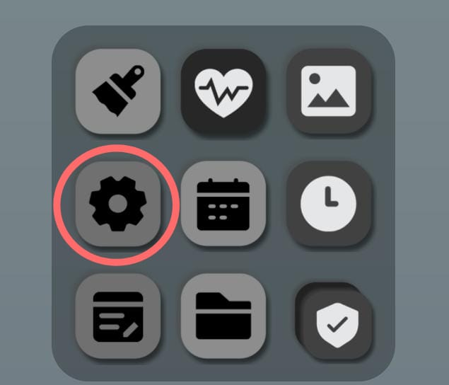
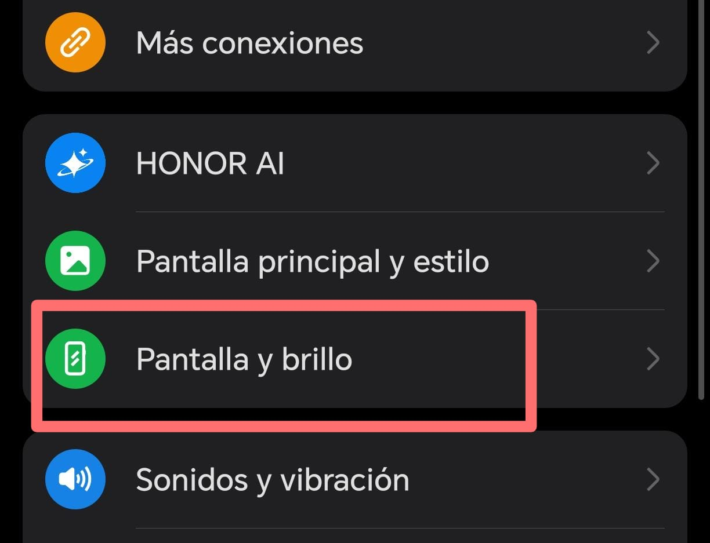
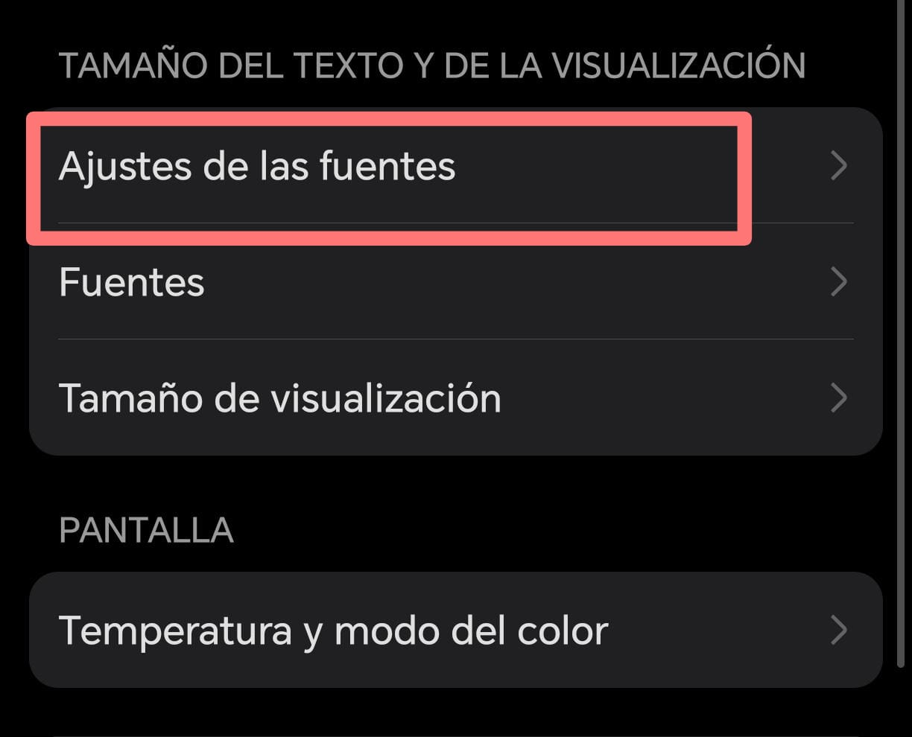
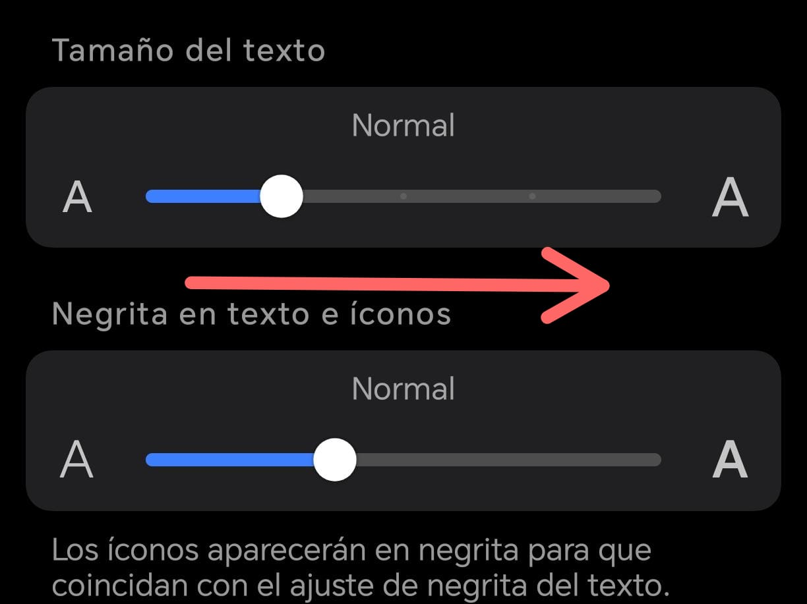

Ejemplo de Tamaño de Letra
Texto pequeño
Texto mediano
Texto grande
Puede aumentar el tamaño para leer más fácilmente.
1. Abra Ajustes
Busque la aplicación "Ajustes" en su celular.

2. Toque "Pantalla"
Dentro de ajustes busque la opción Pantalla.

3. Busque "Tamaño de letra"
Seleccione la opción Tamaño de letra.

4. Ajuste el tamaño
Deslice la barra para hacer la letra más grande.
